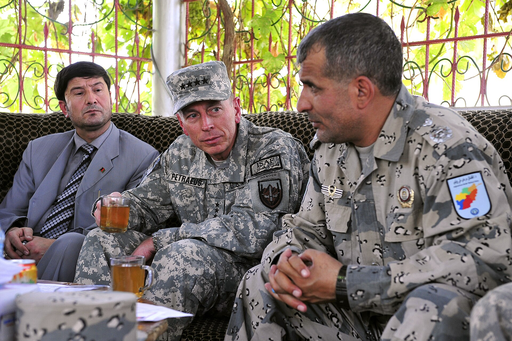

Uzbekistan and Afghanistan: the UN '6+2' group and the Tashkent Declaration (1996–2001)
In the first decade of independence, Uzbekistan's southern neighbor Afghanistan was engulfed in civil war. Tashkent did not recognize the Taliban government, closed the Friendship Bridge, and worked for a settlement within the UN-sponsored '6+2' group. In July 1999 the 'Declaration on Fundamental Principles for a Peaceful Settlement of the Conflict in Afghanistan' was adopted in Tashkent.

When Uzbekistan became independent in 1991, its southern neighbor Afghanistan was in the grip of civil war. After Soviet troops withdrew (1989), fighting among various factions intensified, and from 1996 the Taliban movement gradually took power. This conflict directly shaped Uzbekistan's early foreign policy and security course: for Tashkent, Afghanistan became both a source of threat and an arena of diplomatic activity (Source: Encyclopaedia Britannica — Taliban; Wikipedia — Six plus Two Group on Afghanistan).
The Friendship Bridge and the border
The Friendship Bridge over the Amu Darya, between Uzbekistan (Termez) and Afghanistan (Hairatan), was opened on 12 May 1982, in the Soviet period, as a wartime supply route. After independence this bridge remained Uzbekistan's main land link with Afghanistan. But as the Taliban pushed north and fighting around Mazar-i-Sharif intensified, Uzbekistan closed the bridge in 1997 over security concerns (Source: Wikipedia — Afghanistan–Uzbekistan Friendship Bridge).
The rise of the Taliban and the fall of Mazar-i-Sharif
The city of Mazar-i-Sharif changed hands several times in 1997–1998 and finally fell to the Taliban on 8 August 1998; after that, international organizations documented the killing of many civilians in the city, mostly Hazaras. Abdul Rashid Dostum, the ethnic-Uzbek commander in northern Afghanistan who controlled the areas around Mazar-i-Sharif, left the country when the city was taken (1998) (Source: Human Rights Watch — Afghanistan: The Massacre in Mazar-i Sharif; Wikipedia — Abdul Rashid Dostum).

Uzbekistan's position
Uzbekistan did not recognize the Taliban government. Worldwide, the Taliban government of 1996–2001 was formally recognized by only three states — Pakistan, Saudi Arabia and the United Arab Emirates. Tashkent, for its part, was among the states supporting the anti-Taliban camp — the Northern Alliance (United Front) — and showed sympathy toward the ethnic-Uzbek commander Dostum. Tashkent's main concern was the use of Afghan territory by fighters of the Islamic Movement of Uzbekistan (IMU) (Source: Encyclopaedia Britannica — Taliban; Stanford CISAC — Islamic Movement of Uzbekistan).
The UN '6+2' group
In late 1997 a '6+2' contact group on Afghanistan was formed under UN auspices. '6+2' means the six neighbors of Afghanistan (Uzbekistan, Turkmenistan, Tajikistan, Iran, Pakistan and China) plus two great powers (Russia and the United States). The group's aim was to settle the war between the Taliban and the Northern Alliance by political means, to halt the flow of arms into Afghanistan, and to help form a broad-based, multi-ethnic government. The UN special envoy Lakhdar Brahimi used this formula in 1997 to bring all sides to the negotiating table (Source: Wikipedia — Six plus Two Group on Afghanistan; Human Rights Watch — Crisis of Impunity).
The Tashkent Declaration (19 July 1999)
The most visible result of the '6+2' group was the 'Declaration on Fundamental Principles for a Peaceful Settlement of the Conflict in Afghanistan,' adopted in Tashkent on 19 July 1999 (UN document A/54/174-S/1999/812). The declaration proclaimed its core principles: not to provide military support to any Afghan side and not to allow their territories to be used for that purpose; to respect the sovereignty, territorial integrity and national unity of Afghanistan; to settle the conflict not militarily but through peaceful negotiation; and to support a broad-based, multi-ethnic government. Brahimi also took part in the ceremony (Source: PeaceRep — Tashkent Declaration; Wikipedia — Six plus Two Group on Afghanistan).
However, about a week after the declaration, the Taliban launched a major military offensive; the UN Security Council condemned the offensive (22 October 1999). Thus, although the Tashkent initiative gave Uzbekistan a visible diplomatic role, it did not stop the conflict (Source: UN Press — Security Council statement; Wikipedia — Six plus Two Group on Afghanistan).
The security factor: the IMU
The Islamic Movement of Uzbekistan (IMU) was established in 1998 and, with the Taliban's permission, gained bases on Afghan territory — in Mazar-i-Sharif, Kunduz and elsewhere. The Uzbek government blamed the IMU for the February 1999 bombings in Tashkent; the group carried out incursions into Kyrgyz territory in 1999–2000. The IMU leaders Tahir Yuldash and Jumaboy Khojayev (Juma Namangani) were sentenced to death in absentia by an Uzbek court in November 2000. It was precisely this threat that was the main reason Tashkent kept tight control of the border and the bridge closed (Source: Stanford CISAC — Islamic Movement of Uzbekistan; Wikipedia — Islamic Movement of Uzbekistan).
2001 and after
After the events of 11 September 2001 the situation changed sharply: in October 2001 Uzbekistan granted the United States use of the Karshi-Khanabad (K2) air base. When the Taliban was defeated in the north, the Friendship Bridge, closed for years, reopened on 9 December 2001 — with a thousand-ton shipment of humanitarian wheat sent from Uzbekistan to the Afghan population. In this way the first period in relations with Afghanistan ended and a new stage began (Source: Wikipedia — Karshi-Khanabad Air Base; Wikipedia — Afghanistan–Uzbekistan Friendship Bridge).
Why this matters
The Afghan dimension shows how independent Uzbekistan's early foreign policy and security strategy took shape: a war in a neighboring state, the non-recognition of the Taliban, the closure of the Friendship Bridge, and diplomacy within the UN '6+2' group — all of this defined the young state's place in the region. This article presents only verified dates and evidence, in a balanced way.

Sources
- Wikipedia — Six plus Two Group on Afghanistan
- PeaceRep — Tashkent Declaration on Afghanistan (19 July 1999)
- UN Press — Security Council statement on Afghanistan (22 October 1999)
- Human Rights Watch — Afghanistan: The Massacre in Mazar-i Sharif (1998)
- Human Rights Watch — Crisis of Impunity (2001)
- Encyclopaedia Britannica — Taliban
- Wikipedia — Afghanistan–Uzbekistan Friendship Bridge
- Stanford CISAC — Islamic Movement of Uzbekistan
- Wikipedia — Karshi-Khanabad Air Base